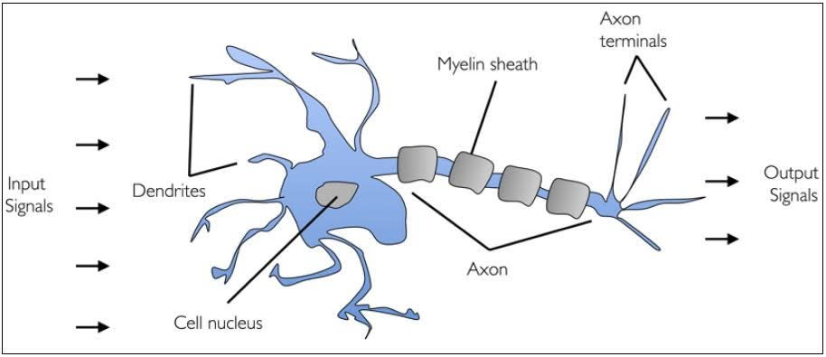

A Beginner's Guide For Perceptron
Biological Neuron
A human brain has billions of neurons. Neurons are interconnected nerve cells in the human brain that are involved in processing and transmitting chemical and electrical signals. Dendrites are branches that receive information from other neurons.
The Neural Networks work the same way as the perceptron. So, if you want to know how neural network works, learn how perceptron works.
The perceptron is an algorithm for supervised learning of binary classifiers. it is a single layer neural network, the model consists of a linear combiner followed by a hard limiter. it is a neural network unit (an artificial neuron) that does certain computations to detect features or business intelligence in the input data. And this perceptron tutorial will give you a knowledge of Perceptron and its activation functions.
The perceptron consists of 4 parts
- Input values
- Weights and Bias
- Summation
- Activation Function
But how does it work?
- All the inputs x are multiplied with their weights w.
- Add all the multiplied values and call them Weighted Sum.
- Apply that weighted sum to the correct Activation Function.

Why do we need Bias?
A bias value allows you to shift the activation function curve up or down
Why do we use Perceptron?
Perceptron is usually used to classify the data into two parts. Therefore, it is also known as a Linear Binary Classifier.
ANN learning problems
- Underfitting: Training error too large.
- Overfitting: Training error small, but testing error large.
Use cross validation to solve overfitting problems
- Training data (70%)
- Validation data (15%) "optimize parameter setting"
- Test data (15%) "Generalization error"